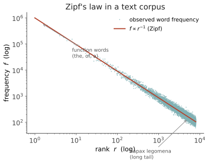

本页目录
信息 I · 熵、信道与 Zipf 律
对标：Cover & Thomas《Elements of Information Theory》ch.2、Shannon 1948、Jurafsky & Martin ch.3 ｜ 前置：🔗 数学站信息论线 / grad-math it2 ｜ 证据地位：【实】——这一整条线有裁判：熵可算、Zipf 可测、surprisal 可实验。这是全课最扎实的地基，也是你最强的直觉所在。 线二的立场：把语言当信道，用数字量它。 前面四页给了透镜，从这页起给透镜装上数学——熵、互信息、冗余、Zipf。凡本线所讲，都能在一段真实语料上亲手验证（见 labs L1）。
1. 熵：不确定性的唯一合理度量
一个离散随机变量 \(X\)（比如"下一个词"），取值概率 \(p(x)\)，其香农熵：
直觉：\(H\) 是平均每个符号携带的信息量，也是"平均要问多少个是非题才能定位 \(X\)"。均匀分布熵最大（最不可预测），确定性分布熵为 0。Shannon 证明：满足几条自然公理（连续、单调、可分解）的不确定性度量唯一就是这个式子——所以熵不是众多选择之一，是被逼出来的。
条件熵度量"已知上下文后还剩多少不确定"： $\(H(X\mid Y) = -\sum_{x,y} p(x,y)\log_2 p(x\mid y)\)$ 互信息 \(I(X;Y)=H(X)-H(X\mid Y)\) = "\(Y\) 告诉了我们多少关于 \(X\)"——线三分布语义、线二 surprisal 都用它。
2. 语言的熵率：一个字母携带多少信息
语言是符号序列，要的是熵率（entropy rate）——长序列下每符号的平均熵：
Shannon 1951 的经典实验：让人猜英文下一个字母，从猜测统计反推，得英文熵率约 1.0–1.3 bits/字母——而 26 字母 + 空格若均匀是 \(\log_2 27 \approx 4.75\) bits。差出的 3 bits 多就是冗余（redundancy）。 英语约 75% 冗余：删掉一大半字母你仍能读（"th_s s_nt_nce"）。
冗余不是浪费，是抗噪（接 info-03）：信道有噪声（口音、笔误、走神），冗余让信息在丢失部分符号后仍可恢复。自然语言把"效率"和"鲁棒"折中在一个特定点上——这个点在哪、为什么，就是可研究的量。
3. 交叉熵与困惑度：模型好坏的尺子
我们不知道语言的真实分布 \(p\)，只有模型 \(q\)。交叉熵衡量"用 \(q\) 编码真实 \(p\) 要花多少 bits"：
\(D_{\mathrm{KL}}\ge 0\)（相对熵，🔗 grad-math），当且仅当 \(q=p\) 取 0。所以最小化交叉熵 = 让模型逼近真实语言分布——这正是每个语言模型（含 LLM）的训练目标（🔗 ai-06）。
语言学/NLP 常用困惑度（perplexity） \(= 2^{H(p,q)}\)：模型在每一步"平均在多少个词里犹豫"。困惑度从 GPT 之前的几百降到今天的个位数——这条曲线就是"预测能力"的量化史（线六 scaling 会接）。记住这个等式：训练大模型，数学上就是在把交叉熵往语言的真实熵率压。
4. Zipf 律：语言最稳的经验规律
数任何语料的词频，按频次排名 \(r\)，画频次 \(f\) 对 \(r\) 的双对数图——近似一条直线：
第 1 名词（the）频次约是第 2 名（of）的 2 倍、第 100 名的 100 倍。这就是 Zipf 律，跨语言、跨时代、甚至跨到 DNA、城市人口、收入分布都成立。

信息论解释（为什么会这样）——有几套，都指向"优化"：
- 最省力原则（Zipf 本人）：说话人想省力（少数高频词反复用），听话人想省力（词越多越好消歧）。两方拉锯的帕累托折中恰好产生 \(1/r\) 分布。
- Mandelbrot：把词看成用字母编码的信源，在"平均码长最小"约束下优化，导出 Zipf-Mandelbrot 分布 \(f\propto (r+\beta)^{-\alpha}\)。Zipf 是熵优化的解。
- 警惕：随机打字（"猴子打字机"）也能产出近似 Zipf（Miller）——所以 Zipf 本身不证明语言有深层设计，它是"离散符号 + 长尾"的通用统计后果。这是本页最重要的一条批判性提醒：一个漂亮的幂律不等于一个深刻的语言学结论。
5. 长尾的代价：稀疏与 Heaps 律
Zipf 的直接后果是长尾：大部分词类型（types）极罕见，语料里约一半词只出现一次（hapax legomena）。相关的 Heaps 律：词汇量 \(V\) 随语料长度 \(N\) 亚线性增长，\(V \propto N^{\beta},\ \beta<1\)——你永远在见新词。
这对建模是硬约束： - 罕见词的概率无法从频率可靠估计 → 需要平滑（smoothing）、子词切分（BPE，🔗 ai-06）、或向量泛化（线三）。 - 它也是"为什么要分布式表示"的信息论理由：把词嵌进连续空间，才能对没见够的词借用邻居的统计强度。Zipf 长尾，是词向量存在的必要性证明。
6. 要点与思考
思考 1（熵率是理论天花板） 语言的熵率 \(h\) 给出任何模型困惑度的下界——没有模型能把英文压到低于其真实熵率（除非它作弊利用了熵率定义之外的语境）。当代 LLM 的每字节 bits 已逼近人类估计的语言熵率，意味着"纯预测下一符号"这条路的信息论空间快见底——剩下的增益从哪来？（线六 ai-01 的关键疑问。）
思考 2（互信息与"意义"） 两个词的互信息 \(I(w_1;w_2)\) 高，说明它们共现远超随机（collocation，如 "strong–tea"）。分布语义（线三）本质就是在挖词与上下文的互信息结构。 试想：一个词的"意义"能否定义为它与整个语境的互信息模式？这是把 ling-01"意义即关系"彻底信息论化的尝试。
思考 3（Zipf 的诱惑与陷阱） 幂律太漂亮，容易过度诠释。做研究时的纪律：看到幂律，先问"最简单的无意义机制能不能也产生它"（如随机分割、优先连接）。区分"语言特有的优化"与"离散长尾的通用统计"，是你从"发现规律"走向"发现机制"的分水岭。\(\blacksquare\)
下一页：信息 II——surprisal。把"可预测性"从语料层面下沉到逐词层面，并接上一个惊人的实证：人读一个词的时间，几乎线性正比于它的 surprisal。这是信息论对人脑的第一条定律。